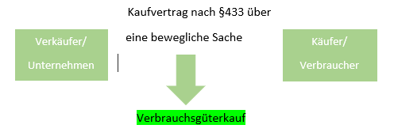

Tatsächliche und gefühlte Inflation

Gefahrenübergang:
beim Versendungskauf bei Übergabe an den Käufer
Beweislastumkehr:
Bei Sachmangel innerhalb von 6 Monaten, nach Gefahrübergang
Ausschluss der Mängelhaftung:
(außer Schadensersatz) unzulässig
Gewährleistungsfrist:
Bei neuen Sachen min. 2 Jahre, bei gebrauchten Sachen min. ein Jahr